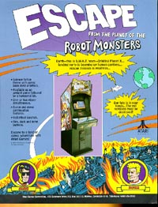

ATARI Coin-Op/Arcade
Systems
1986 - 1989
1986
VSRBI, Virtual Sports Runs
Batted In was another of Atari's sports arcade coin-ops.
Sports games as a general rule usually do only luke warm compared to action
arcade games like Asteriods, Tempest, and others. VSRBI
was a well designed baseball game with good views of the field, realistic
action and good background sound effects. All in all a very
good coin-op baseball game.
1988
Blasteroids, Atari's third version
of Asteroids. Asteroids Deluxe being the second. Blasteroids
combined excellent color shading, high speed graphics processing and excellent
sound effects to create a modern and updated look and feel for the classic
Atari Asteroids. Of course, in most cases the sequels never
quite live up the original and although Blasteroids was an excellent game...
you can't beat the original.
1988
Toobin
was again, Atari Games return to the classic, clean and simple fun coin-op
game. You control your character riding along inside a large
inner-tube down through streams, rapids and waterfalls while dodging an
assortment of characters and creatures looking to bump, jump and knock
you off. Toobin was a truly full enjoyable game, right up Atari
Games alley...
1989
Skull & Crossbones, Atari
Games swashbuckling third person interactive action adventure game
had a unique premise, good action and skill moves and an interest lot of
rag-tag pirates, parrots and other bad-guys to go up against.
1989
Escape
from the Planet of the Robot Monsters.... ok, say that title 10 times straight!
Known for its unusally long name, Escape was based on a cartoon-ish premise
to combined an action arcade game with a cast of characters to choose from.